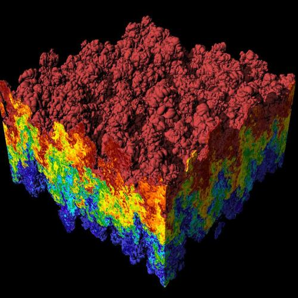

Método Monte Carlo
El Método Monte Carlo es un método numérico para simular sistemas físicos o matemáticos la virtud de esté método radica en un eficacia mayor a los usuales debido que hace uso de métodos aleatorios.

Uno de los principales usos de este método es la integración consiste en tratar de obtener el valor \[ \mu=\int f(x) dV \] para lo cual se generan variables aleatorias \(X_1,X_2,\dots\) independientes con densidad \(V\), por lo que la ecuación anterior es igual a \(\mathbb{E}f(X_i)=\mu\), y por lo tanto, por la ley de los Grandes Números, se sigue que \[ \frac{\sum_{i=1}^n f(X_i)-n\mu}{n}=\frac{\sum_{i=1}^n f(X_i)}{n}-\mu\underset{n\rightarrow\infty}{\longrightarrow} 0\qquad \mbox{c.s.}. \]
Entonces si quiero obtener el valor \(\mu\) basta con que promedie un número \(n\) suficientemente grande de variables; de aquí se desprende la primera pregunta y la más importante para entregar resultados: ¿qué tan grande debe ser $latex n$ para obtener un resultado bueno?.
Un primer acercamiento a esta pregunta es calcular la varianza de \(\tilde{I}n=\frac{\sum^n f(X_i)}{n}\) de donde \[ \mathbb{V}\mbox{ar} \tilde{I}=\frac{\mathbb{V}\mbox{ar} f(X_i)}{n}=\frac{\sigma^2}{n}, \] esto implica que lo único importante es hacer \(n\) suficientemente grande para que \(\frac{\sigma^2}{n}<\epsilon\), pero esto no siempre es suficiente para tener una buena aproximación ya que la varianza de una variable no siempre nos dice cosas sobre como es la variable aleatoria (vease casos en los que es inútil la desigualdad de Chebyshev), es aquí donde el otro gran teorema de la Probabilidad entra a resolver esta duda.
El Teorema del Límite Central nos dice que \[ \frac{\sum_{i=1}^n f(X_i)-n\mu}{\sqrt{n}\sigma}\underset{n\rightarrow\infty}{\longrightarrow} N(0,1)\qquad \mbox{en distribución}, \] esto es \[ \mathbb{P}\left(\frac{X_1+X_2+\dots+X_n-n\mu}{\sqrt{n}\sigma}\leq x\right)\underset{n\rightarrow\infty}{\longrightarrow}\Phi(x) \] donde \(\Phi(x)\) es la distribución normal. Pero qué tiene que ver esto con el problema de decir cual es la \(n\) que debemos poner para obtener una buena estimación.
Notemos que \(|\tilde{I}_n - \mu|\) es nuestro error en la aproximación por lo cual usando el Teorema del Límite Central se tiene que \[ \mathbb{P} \left(|\tilde{I}_n-\mu|<\frac{x\sigma}{\sqrt{n}}\right)\approx\mathbb{P}(|Z_n|<x)=2\Phi(x)-1. \]
Aplicando esto se tiene por ejemplo que si quiero que con un 95% de eficacia el error sea menor que 1/1000 tenemos \[ 2\Phi(x)-1=0.95\qquad \Longrightarrow\qquad \Phi(x)=1.95/2=0.975 \] de donde, usando un tabla para \(\Phi(x)\), se tiene que \(x=1.96\) y ahora \(n\) se tiene que elegir tal que \(1.96\,\sigma/\sqrt{n}\leq 1/1000\), y es así como se resuelve la pregunta tan molesta de que tan grande debe ser \(n\). Como se puede ver también en este método además del error de la aproximación se tiene un error de confiabilidad.
Queda un problema en el aire el cual ya no discutiré pero debe de tomarse en cuenta este es: ¿cómo calcular \(\sigma\)?, a veces será más fácil que calcular la esperanza pero la gran mayoría de las veces será igual o más complicado que calcular esta.